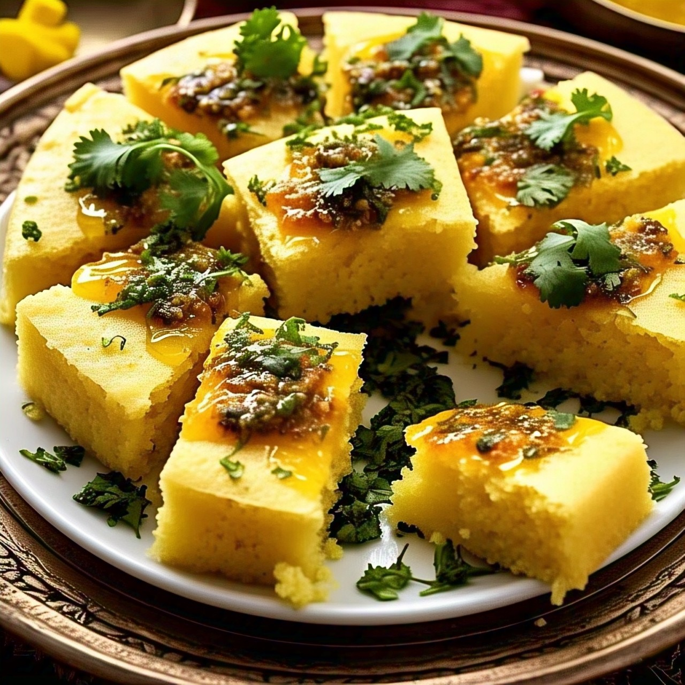

Enjoy soft and fluffy Dhokla anytime
Dhokla
Ingredients:
- 1 cup gram flour (besan)
- 1/2 cup yogurt
- 1/2 cup water
- 1/2 tsp turmeric powder
- 1 tsp fruit salt (eno)
- 1/2 tsp salt
- 1 tbsp lemon juice
- 1 tbsp oil
- 1 tsp mustard seeds
- 1 tsp sesame seeds
- 8-10 curry leaves
- 2 green chilies (slit)
- Fresh coriander leaves for garnish

Recipe:
- In a bowl, mix gram flour, yogurt, water, turmeric, lemon juice, and salt into a smooth batter.
- Add fruit salt and mix gently. Pour into a greased steaming tray.
- Steam for 15-20 minutes until cooked through.
- Heat oil, add mustard seeds, sesame seeds, curry leaves, and green chilies. Pour over dhokla.
- Garnish with coriander and serve with chutney.